In this chapter, we delve into the fundamental concepts of random variables and stochastic processes, essential components of probability theory and statistical analysis in the realm of machine learning. This section aims to provide an introduction to the principles governing probability, characteristics of random variables, and the nature of stochastic processes. Central to understanding data’s inherent randomness and uncertainty, these topics are indispensable for developing a solid theoretical foundation in machine learning algorithms. This overview encompasses a spectrum of topics, from elementary probability distributions to sophisticated techniques such as Bayesian inference and Monte Carlo methods. Emphasizing both theoretical acumen and practical application, the course integrates Python-based examples to demonstrate the real-world applicability of these concepts. This overview is designed to equip students with the essential knowledge and skills to become experts in machine learning.
4.1 Definitions and Probability Axioms
Probability theory begins with the fundamental notion of a probability space, which consists of three elements: a sample space \(\Omega\), a set of events \(F\), and a probability measure \(P\).
Sample Space (\(\Omega\)): The set of all possible outcomes of a random experiment. For example, in a coin toss, \(\Omega = \{\text{heads}, \text{tails}\}\).
Events (\(F\)): A collection of outcomes (a subset of \(\Omega\)). An event is said to occur if the outcome of the experiment is in this set.
Probability Measure (\(P\)): A function that assigns a probability to each event in \(F\), satisfying the following axioms:
Non-negativity: For every event \(A \in F\), \(P(A) \geq 0\).
Normalization: \(P(\Omega) = 1\).
Additivity: For any sequence of mutually exclusive events \(A_1, A_2, \ldots\), \(P(\bigcup_{i} A_i) = \sum_{i} P(A_i)\).
4.2 Conditional Probability
Conditional probability refers to the probability of an event given that another event has occurred, denoted as \(P(A|B)\)for events \(A\)and \(B\). It is defined as: \[ P(A|B) = \frac{P(A \cap B)}{P(B)} \] provided that \(P(B) > 0\).
4.3 Bayes’ Theorem
Bayes’ theorem provides a way to update our probability estimates based on new information. It is expressed as: \[ P(A|B) = \frac{P(B|A) P(A)}{P(B)} \] where:
\(P(A|B)\) is the posterior probability of \(A\) given \(B\).
\(P(B|A)\) is the likelihood of \(B\) given \(A\).
\(P(A)\) is the prior probability of \(A\).
\(P(B)\) is the marginal probability of \(B\).
Bayes’ theorem is foundational in various machine learning algorithms, especially in Bayesian inference, where it is used to update the probability estimate for a hypothesis as more evidence or information becomes available.
4.4 Discrete Random Variables
Definition: A discrete random variable is a type of random variable that can take on a countable number of distinct outcomes. Common examples include the number of heads in a coin toss or the number of successes in a series of Bernoulli trials.
Probability Mass Function (PMF): The PMF of a discrete random variable provides the probabilities of all possible outcomes. For a discrete random variable \(X\), the PMF \(P(X=x)\) gives the probability that \(X\) equals a particular value \(x\).
4.4.1 Continuous Random Variables
Definition: A continuous random variable is a random variable that can take on an uncountably infinite number of possible values. For example, the exact time it takes for a chemical reaction to occur or the precise temperature at a given location.
Probability Density Function (PDF): For continuous random variables, the PDF is used to specify the probability of the random variable falling within a particular range of values. The probability of the variable falling within an interval is given by the integral of the PDF over that interval.
4.5 Cumulative Distribution Functions (CDFs)
Definition: The CDF is a function that gives the probability that a random variable is less than or equal to a certain value. It applies to both discrete and continuous random variables.
Expression: For a random variable \(X\), the CDF \(F(x)\) is defined as \(F(x) = P(X \leq x)\). In the case of a discrete random variable, it is the sum of the probabilities up to \(x\); for a continuous variable, it is the integral of the PDF up to \(x\).
We’ll use Python to generate illustrations for PMFs, PDFs, and CDFs. For PMFs, we’ll consider a simple binomial distribution, and for PDFs and CDFs, we’ll use a normal distribution.
import numpy as npimport matplotlib.pyplot as pltfrom scipy.stats import binom, norm# PMF of a Binomial Distributionn, p =10, 0.5# Parameters for the binomial distributionx_binom = np.arange(0, n+1)pmf_binom = binom.pmf(x_binom, n, p)plt.figure(figsize=(12, 4))plt.subplot(1, 3, 1)plt.bar(x_binom, pmf_binom)plt.title('PMF of a Binomial Distribution')plt.xlabel('Number of Successes')plt.ylabel('Probability')# PDF and CDF of a Normal Distributionmu, sigma =0, 1# Mean and standard deviationx_norm = np.linspace(-4, 4, 1000)pdf_norm = norm.pdf(x_norm, mu, sigma)cdf_norm = norm.cdf(x_norm, mu, sigma)plt.subplot(1, 3, 2)plt.plot(x_norm, pdf_norm)plt.title('PDF of a Normal Distribution')plt.xlabel('Value')plt.ylabel('Density')plt.subplot(1, 3, 3)plt.plot(x_norm, cdf_norm)plt.title('CDF of a Normal Distribution')plt.xlabel('Value')plt.ylabel('Cumulative Probability')plt.tight_layout()plt.show()
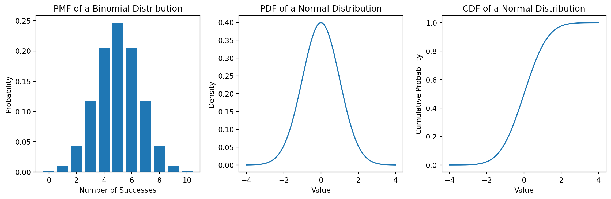
The Python code creates a figure with three subplots: the first showing the PMF of a binomial distribution, the second showing the PDF of a normal distribution, and the third displaying the CDF of the same normal distribution.
4.6 Expected Value
Definition: The expected value (or mean) of a random variable is a measure of the central tendency of the variable’s probability distribution. Mathematically, for a discrete random variable \(X\) with possible values \(x_1, x_2, \ldots\) and a probability mass function \(P(X)\), the expected value \(\mathbb{E}\left[X\right]\) is defined as: \[ \mathbb{E}\left[X\right] = \sum_{i} x_i P(X = x_i).\] For a continuous random variable with a probability density function \(f(x)\), it is defined as: \[ \mathbb{E}\left[X\right] = \int_{-\infty}^{\infty} x f(x) dx \]
Properties: The expected value is linear, meaning for any two random variables \(X\) and \(Y\), and constants \(a\) and \(b\), we have \(\mathbb{E}\left[aX + bY\right] = a\mathbb{E}\left[X\right] + b\mathbb{E}\left[Y\right]\).
Significance in Machine Learning: The expected value is used in various machine learning contexts, such as defining the loss functions (e.g., mean squared error) and as a measure of central tendency in data analysis.
4.7 Variance
Definition: The variance of a random variable measures the spread of its values. It is defined as the expected value of the squared deviation from the mean. For a random variable \(X\) with mean \(\mu = \mathbb{E}\left[X\right]\), the variance \(\text{Var}(X)\) is given by: \[ \text{Var}(X) = \mathbb{E}\left[(X - \mu\right]^2] \] which can also be written as: \[\text{Var}(X) = \mathbb{E}\left[X^2\right] - (\mathbb{E}\left[X\right])^2\]
Properties: Variance measures the dispersion of the data. A high variance indicates that the data points are spread out from the mean, while a low variance indicates that they are clustered closely around the mean.
Significance in Machine Learning: In machine learning, variance is a key concept in understanding the model’s behavior, particularly in the bias-variance tradeoff, which is crucial for understanding model performance and overfitting.
We’ll use Python to illustrate the computation of expected value and variance for a simple discrete distribution (e.g., rolling a fair six-sided die) and a continuous distribution (e.g., normal distribution).
import numpy as npimport matplotlib.pyplot as pltfrom scipy.stats import randint, norm# Expected Value and Variance of a Discrete Random Variable (Die Roll)values = np.arange(1, 7)probabilities = np.full(6, 1/6) # Fair dieexpected_value_die = np.sum(values * probabilities)variance_die = np.sum((values - expected_value_die)**2* probabilities)print("Expected Value (Die Roll):", expected_value_die)print("Variance (Die Roll):", variance_die)# Expected Value and Variance of a Continuous Random Variable (Normal Distribution)mu, sigma =0, 1# Mean and standard deviationx = np.linspace(-5, 5, 1000)pdf = norm.pdf(x, mu, sigma)expected_value_normal = np.sum(x * pdf) * (x[1] - x[0]) # Approximate integralvariance_normal = np.sum(((x - mu)**2) * pdf) * (x[1] - x[0])print("Expected Value (Normal Distribution):", expected_value_normal)print("Variance (Normal Distribution):", variance_normal)# Plottingplt.figure(figsize=(12, 5))plt.subplot(1, 2, 1)plt.bar(values, probabilities)plt.title('PMF of a Fair Die')plt.xlabel('Die Value')plt.ylabel('Probability')plt.subplot(1, 2, 2)plt.plot(x, pdf)plt.title('PDF of a Normal Distribution')plt.xlabel('Value')plt.ylabel('Density')plt.show()
Expected Value (Die Roll): 3.5
Variance (Die Roll): 2.9166666666666665
Expected Value (Normal Distribution): 7.112539897498498e-17
Variance (Normal Distribution): 0.9999849286984711
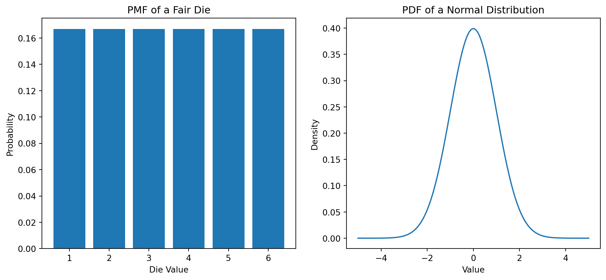
This code calculates and prints the expected value and variance for both a fair die roll (discrete) and a normal distribution (continuous). It also provides visualizations of their probability distributions. These examples demonstrate how expected value and variance are computed and their importance in describing the characteristics of a distribution.
4.8 Law of Large Numbers
The Law of Large Numbers (LLN) is a fundamental theorem in probability theory that describes the result of performing the same experiment a large number of times. It states that as the number of trials or observations increases, the average of the results obtained from these trials converges to the expected value. This theorem provides a solid foundation for the concept of statistical stability and the predictability of outcomes in probability and statistics.
There are two types of Law of Large Numbers:
Weak Law of Large Numbers (WLLN): This version, also known as Khinchin’s Law, asserts that the sample mean converges in probability towards the expected value as the sample size increases. Mathematically, for a sequence of independent and identically distributed (i.i.d.) random variables \(X_1, X_2, ..., X_n\) with expected value \(\mathbb{E}\left[X\right] = \mu\), the WLLN states that for any positive number \(\epsilon\), \[ P\left( \left| \frac{1}{n}\sum_{i=1}^n X_i - \mu \right| < \epsilon \right) \to 1 \text{ as } n \to \infty. \] This means the probability that the sample mean differs from the true mean by more than \(\epsilon\) tends to zero as \(n\) becomes large.
Strong Law of Large Numbers (SLLN): The SLLN states that the sample mean almost surely converges to the expected value as the sample size goes to infinity. In other words, the sample mean and the expected value will be equal with probability 1 in the limit of an infinite number of trials. This is a stronger statement than the WLLN and requires slightly stronger conditions.
Some application of LLNs include:
Empirical Predictability: LLN explains why averages of larger samples are more stable and reliable than those of smaller samples, a principle that underpins much of empirical science.
Statistics and Data Analysis: In statistics, LLN is crucial for the justification of using sample means as estimates for population means.
Financial Modeling: In finance, LLN helps in predicting long-term investment outcomes based on historical averages.
Quality Control: In industrial processes, LLN is used to understand that averaging the results of a process over a long period will give a good estimation of the overall process performance.
The Law of Large Numbers is a cornerstone of probability theory and statistics, providing a rationale for the apparent regularity of large systems and the basis for making inferences about population parameters based on sample statistics. It essentially underlines the reliability of averages in large datasets, a key concept in many practical applications across various disciplines.
A simple demonstration of LLN is achieved by the following Python code.
import numpy as npimport matplotlib.pyplot as plt# Define the number of trialstrials = [10, 50, 100, 500, 1000, 5000, 10000]# Define a random variable (e.g., a normal distribution)mean =0std_dev =1np.random.seed(0) # for reproducibility# Store the average outcomesaverages = []# Simulate the trialsfor n in trials: samples = np.random.normal(mean, std_dev, n) average = np.mean(samples) averages.append(average)# Plotting the resultsplt.figure(figsize=(10, 6))plt.plot(trials, averages, marker='o', linestyle='-', color='b')plt.axhline(y=mean, color='r', linestyle='--')plt.title('Demonstration of the Law of Large Numbers')plt.xscale('log') # Log scale for better visualizationplt.xlabel('Number of Trials (log scale)')plt.ylabel('Sample Mean')plt.grid(True)plt.show()
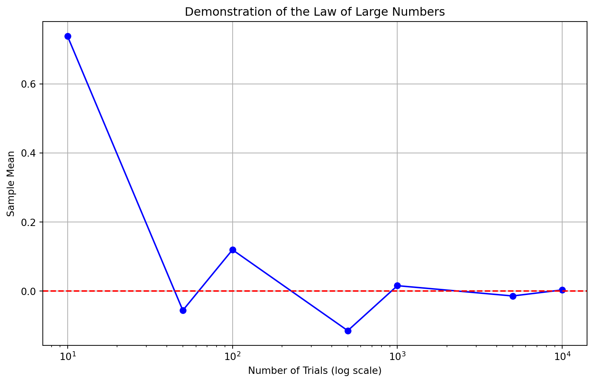
In the plot, the x-axis represents the number of trials (on a logarithmic scale for clarity), ranging from small to large sample sizes. The y-axis shows the sample mean for each set of trials. The red dashed line indicates the true mean of the distribution (0 in this case). We observe that as the number of samples increases, the emprical mean converges to the true mean.
The Python script demonstrates the Law of Large Numbers (LLN) by simulating random samples from a normal distribution with a mean of 0 and a standard deviation of 1. As the number of trials increases, the script calculates the sample mean for each set of trials and plots these means. As illustrated in the plot, as the number of trials increases, the sample mean converges towards the true mean of the distribution, consistent with the Law of Large Numbers. This demonstrates that with a larger number of observations, the average of the outcomes tends to get closer to the expected value, showcasing the LLN’s fundamental principle in probability and statistics.
4.9 Central Limit Theorem
The Central Limit Theorem (CLT) is a fundamental principle in probability theory that states that the distribution of the sum (or average) of a large number of independent, identically distributed (i.i.d.) random variables will be approximately normally distributed, regardless of the underlying distribution of the individual variables. This theorem is pivotal in statistics because it justifies the use of the normal distribution in many real-world situations.
Key Points of the CLT:
Normal Approximation: As the sample size grows, the distribution of the sample mean will approach a normal distribution, even if the original variables are not normally distributed.
Conditions: The CLT holds under certain conditions, primarily that the variables are independent and identically distributed with a finite mean and variance.
Sample Mean and Variance: The mean of the sample means will be equal to the mean of the original distribution, and the variance of the sample means will be equal to the variance of the original distribution divided by the sample size.
The Central Limit Theorem and the Law of Large Numbers (LLN) are related but address different aspects of convergence:
Law of Large Numbers: The LLN focuses on the convergence of the sample mean to the expected value as the sample size increases. It asserts that the average of a large number of i.i.d. random variables will be close to the expected value, providing a strong foundation for statistical estimation.
Central Limit Theorem: The CLT takes this a step further by describing the shape of the distribution of the sample mean. It not only asserts that the sample mean will converge to the expected value but also that the way in which it converges will follow a normal distribution if the sample size is large enough. This is crucial for hypothesis testing and confidence interval estimation.
In summary, while the LLN tells us that the sample mean will be a good estimate of the population mean for large sample sizes, the CLT tells us about the distribution of this estimate, enabling the use of normal distribution-based inference methods even when the underlying data does not follow a normal distribution.
The following Python script demonstrates the Central Limit Theorem (CLT) by generating distributions of sample means from an original normal distribution (with a mean of 5 and standard deviation of 2) for different sample sizes. The script creates multiple samples for each specified sample size and computes the mean of each sample.
import numpy as npimport matplotlib.pyplot as plt# Settings for the demonstrationsample_sizes = [10, 30, 50, 100, 500]number_of_samples =1000original_distribution_mean =5original_distribution_std =2# Function to generate sample meansdef generate_sample_means(sample_size, number_of_samples, mean, std):return [np.mean(np.random.normal(mean, std, sample_size)) for _ inrange(number_of_samples)]# Plot the distributions of sample meansplt.figure(figsize=(12, 8))for sample_size in sample_sizes: sample_means = generate_sample_means(sample_size, number_of_samples, original_distribution_mean, original_distribution_std) plt.hist(sample_means, bins=30, alpha=0.5, label=f'Sample Size = {sample_size}')plt.title('Central Limit Theorem Demonstration')plt.xlabel('Sample Mean')plt.ylabel('Frequency')plt.legend()plt.show()
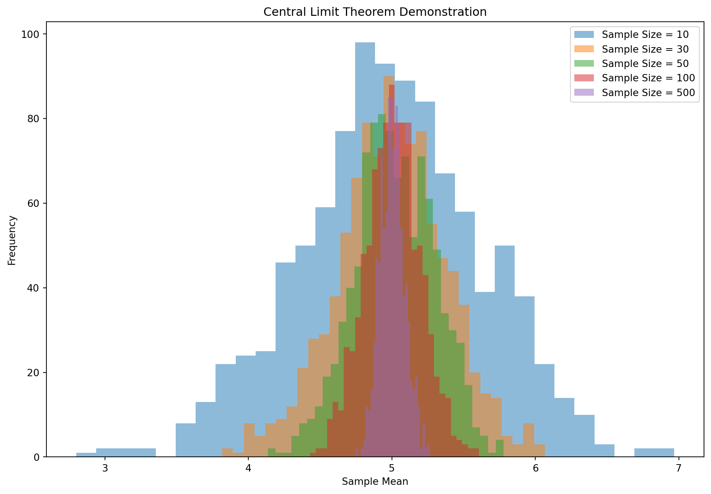
In the figure, each histogram represents the distribution of sample means for a particular sample size. As the sample size increases, the distribution of the sample means becomes more tightly clustered around the true mean of the original distribution (5 in this case). The shape of these distributions of sample means increasingly resembles a normal distribution, especially as the sample size gets larger.
The plot effectively illustrates the essence of the CLT: regardless of the original distribution (which is normal in this case but could be any distribution with a defined mean and variance), the distribution of the sample means approaches a normal distribution as the sample size increases. This phenomenon underpins many statistical methods, especially those involving hypothesis testing and confidence interval estimation.
4.10 Common Distributions
Binomial Distribution
Description: The binomial distribution models the number of successes in a fixed number of independent Bernoulli trials.
Parameters: Number of trials \(n\) and probability of success \(p\) in each trial.
This code will generate a series of plots illustrating the probability mass or density functions for each of the five distributions. These visualizations help in understanding the characteristics and differences of these common distributions, which are widely used in various machine learning and statistical modeling scenarios.
4.11 Joint, Marginal, and Conditional Distributions
Understanding the relationships between multiple random variables is crucial in statistics and machine learning. Here we’ll discuss joint, marginal, and conditional distributions.
4.11.1 Joint Distributions
Joint distributions are fundamental in understanding the relationship between two or more random variables. They can be categorized based on whether the variables involved are discrete, continuous, or a combination of both.
For discrete random variables, the joint distribution is defined by a joint probability mass function (PMF). This function gives the probability that each of the random variables falls within a specific range of values. For discrete random variables \(X\) and \(Y\), the joint PMF \(P(X = x, Y = y)\) provides the probability that \(X = x\) and \(Y = y\) simultaneously. Probabilities are calculated by summing the joint PMF over the desired range of values. They have the following properties:
The sum of the joint PMF over all possible values of \(X\) and \(Y\) is 1.
The joint PMF is always non-negative: \(P(X = x, Y = y) \geq 0\).
In the case of continuous random variables, the joint distribution is described by a joint probability density function (PDF). The joint PDF \(f_{X,Y}(x, y)\) represents the density of probabilities at any point in the range of \(X\) and \(Y\). Probabilities are calculated by integrating the joint PDF over the region of interest. They have the following properties:
The integral of the joint PDF over the entire space is 1.
The joint PDF is non-negative: \(f_{X,Y}(x, y) \geq 0\).
Joint distributions are used in machine learning for modeling the relationships between features, in probabilistic classifiers, and in Bayesian inference, where understanding the dependence between variables is crucial. Joint distributions also form a core concept in statistics and machine learning, as they provide a comprehensive picture of how multiple random variables interact with each other.
Homogenous Joint Distributions
Homogeneous joint distributions refer to joint probability distributions where the involve random variables that follow identical types of distributions. They also refer to probability distributions where the statistical properties and relationships between two or more random variables remain consistent across the entire range of their values. The following are some examples of homegenous joint distributions:
Joint Probability Mass Function (Discrete Random Variables) Consider the outcomes from tossing two dice. Let \(X\) be the outcome of the first die, and \(Y\) be the outcome of the second die. Both \(X\) and \(Y\) are discrete random variables taking values from 1 to 6. The joint PMF \(P(X = x, Y = y)\) is \(\frac{1}{36}\) for \(x, y \in \{1, 2, 3, 4, 5, 6\}\), assuming fair dice.
Joint Probability Density Function (Continuous Random Variables) Consider a height and weight distribution. Let \(X\) be a person’s height (in cm) and \(Y\) their weight (in kg). Suppose \(X\) and \(Y\) have a joint PDF given by \(f(x, y) = k \cdot e^{-2x - 3y}\) for \(x, y > 0\) (a hypothetical example). Here, \(k\) is a normalizing constant to ensure that the total probability integrates to 1.
Bivariate Normal Distribution A common example in statistics is the bivariate normal distribution. Let \(X\) and \(Y\) be jointly normally distributed with means \(\mu_X, \mu_Y\), standard deviations \(\sigma_X, \sigma_Y\), and correlation coefficient \(\rho\). The joint PDF is: \[ f(x, y) = \frac{1}{2\pi\sigma_X\sigma_Y\sqrt{1-\rho^2}} \exp\left(-\frac{1}{2(1-\rho^2)}\left[\frac{(x-\mu_X)^2}{\sigma_X^2} + \frac{(y-\mu_Y)^2}{\sigma_Y^2} - \frac{2\rho(x-\mu_X)(y-\mu_Y)}{\sigma_X\sigma_Y}\right]\right).\]
Multivariate Gaussian Distribution The Multivariate Gaussian (or Normal) Distribution is a generalization of the one-dimensional Gaussian distribution to multiple dimensions. It describes a random vector in \(n\)-dimensional space with a specific correlation structure between its elements.
A random vector \(\boldsymbol{x}= [x_1, x_2, ..., x_n]^T\) is said to follow a multivariate Gaussian distribution if its probability density function (PDF) is given by: \[ f(\mathbf{x}; \boldsymbol{\mu}, \boldsymbol{\Sigma}) = \frac{1}{\sqrt{(2\pi)^n |\boldsymbol{\Sigma}|}} \exp\left(-\frac{1}{2}(\mathbf{x} - \boldsymbol{\mu})^T \boldsymbol{\Sigma}^{-1} (\mathbf{x} - \boldsymbol{\mu})\right),\]
where:
\(\boldsymbol{x}\) is a realization of the random vector \(\boldsymbol{x}\).
\(\boldsymbol{\mu}\) is the mean vector, and $$is the covariance matrix.
\(|\boldsymbol{\Sigma}|\) is the determinant of the covariance matrix.
\(\boldsymbol{\Sigma}^{-1}\) is the inverse of the covariance matrix.
It has the following properties:
Mean Vector: \(\boldsymbol{\mu}\) specifies the mean of each component of the vector \(\boldsymbol{x}\).
Covariance Matrix: \(\boldsymbol{\Sigma}\) describes the variance of each component and the covariances between them. The diagonal elements of \(\boldsymbol{\Sigma}\) are the variances of the individual components, and the off-diagonal elements are the covariances.
Correlation Structure: The covariance matrix determines how the components of \(\boldsymbol{x}\) are linearly related to each other.
Shape and Geometry: The shape of the distribution in \(n\)-dimensional space can range from spherical (when \(\boldsymbol{\Sigma}\) is proportional to the identity matrix) to elliptical (when \(\boldsymbol{\Sigma}\) has distinct eigenvalues).
Uniform Distribution Over a Region Consider distribution of random points in a rectangle. Let \(X\) and \(Y\) represent the \(x\) and \(y\) coordinates of a point uniformly distributed over a rectangle \([a, b] \times [c, d]\). The joint PDF is \(f(x, y) = \frac{1}{(b-a)(d-c)}\) for \(a \leq x \leq b\) and \(c \leq y \leq d\), and 0 otherwise.
Heterogenous Joint Distributions
Joint distibutions need not be homogenous. They can be heterogenous as well. Heterogeneous joint distributions involve random variables that may follow different types of distributions, and they can capture complex relationships in probabilistic models. Here are some mathematical examples:
Joint Distribution of a Discrete and a Continuous Variable Suppose \(X\) is a discrete random variable representing the number of defects in a product (following a Poisson distribution with parameter \(\lambda\)), and \(Y\) is a continuous random variable representing the time (in hours) until the first defect is detected (following an Exponential distribution with rate \(\lambda\)). The joint probability function is not a standard PMF or PDF but a mixed distribution that combines the characteristics of both. The joint distribution might be defined as \(f(x, y) = P(X = x) \cdot f_Y(y|x)\), where \(f_Y(y|x)\) is the conditional density of \(Y\) given \(X = x\).
Joint Distribution with Conditional Dependence Let \(X\) be a Bernoulli random variable indicating whether an event occurs (1) or not (0), and \(Y\) be a normally distributed variable representing the outcome measurement, whose mean depends on \(X\). For instance, if \(X = 1\), \(Y\) follows \(N(\mu_1, \sigma^2)\), and if \(X = 0\), \(Y\) follows \(N(\mu_0, \sigma^2)\). The joint distribution is a combination of a Bernoulli and a conditional normal distribution.
Bivariate Distribution with Different Marginals Consider a scenario with two random variables \(X\) and \(Y\), where \(X\) follows a Uniform distribution \(U(a, b)\) and \(Y\), conditionally on \(X\), follows a Normal distribution with mean \(X\) and variance \(\sigma^2\). The joint distribution in this case would be \(f(x, y) = \frac{1}{b-a} \cdot \frac{1}{\sqrt{2\pi\sigma^2}} \exp\left(-\frac{(y-x)^2}{2\sigma^2}\right)\) for \(a \leq x \leq b\).
Piecewise Joint Distribution Imagine a joint distribution where \(X\) and \(Y\) follow different distributions in different regions of their support. For example, for \(x < 0\), \(X\) and \(Y\) might jointly follow one distribution (e.g., bivariate normal), and for \(x \geq 0\), they follow a different distribution (e.g., bivariate exponential).
These heterogeneous joint distributions are particularly useful in modeling complex real-world phenomena where different variables exhibit different types of probabilistic behavior or where their behavior changes under different conditions. Such models are widely used in areas like econometrics, biostatistics, and environmental science.
Some practical examples illustrating such heterogeneous joint distributions are:
Consider a situation where \(X\) is a discrete random variable representing the number of customers arriving at a store (which can be modeled by a Poisson distribution), and \(Y\) is a continuous random variable representing the total amount spent by these customers (which could be modeled by a normal distribution). The joint distribution of \(X\) and \(Y\) would be a mix of a discrete and a continuous distribution.
Suppose \(X\) is a binary variable indicating whether a machine is in operation (1) or not (0), and \(Y\) is a continuous variable representing the temperature of the machine when it is operational. The joint distribution of \(X\) and \(Y\) combines a Bernoulli distribution (for \(X\)) and a conditional continuous distribution (for \(Y\) given \(X = 1\)). This is an example of a joint distribution with binary and continuous variables.
Imagine a survey where \(X\) is a nominal variable representing a respondent’s preferred type of music (e.g., rock, jazz, classical), and \(Y\) is an ordinal variable indicating satisfaction level (e.g., unsatisfied, neutral, satisfied). The joint distribution of \(X\) and \(Y\) would be a cross-tabulation of these categories, showing the frequencies or probabilities of each combination. This is an example of a joint distribution of nominal and ordinal variables.
Consider a scenario where \(X\) is the number of products sold (following a Poisson distribution), and \(Y\) is the number of customer complaints (which could follow a different discrete distribution, such as a binomial distribution). The joint distribution of \(X\) and \(Y\) would describe the relationship between sales and complaints, but each variable follows its own distinct distribution. This is an example of a joint distribution with multiple discrete variables with different distributions.
These examples of heterogeneous joint distributions highlight the complexity and diversity of real-world data, where variables can be of different types and follow different distributions, yet their interdependence can be crucial for analysis and decision-making.
4.11.2 Marginal Distribution
Marginal distributions are used to describe the probability distribution of a subset of a collection of variables, irrespective of the values of the other variables. They are particularly important in multivariate analysis, where we have multiple interrelated random variables. The marginal distribution of a variable is the probability distribution of that variable alone, obtained by summing (in the discrete case) or integrating (in the continuous case) the joint distribution over the other variable.
For discrete variables, \[ P(X = x) = \sum_{y} P(X = x, Y = y). \]
For continuous random variables, the marginal distribution of a variable is obtained by integrating the joint probability density function (PDF) over the range of the other variables. Suppose \(f(x, y)\) is the joint PDF of two continuous random variables \(X\) and \(Y\). The marginal PDFs of \(X\) and \(Y\) are given by:
Marginal PDF of \(X\): \[ f_X(x) = \int_{-\infty}^{\infty} f(x, y) \, dy.\]
Marginal PDF of \(Y\): \[ f_Y(y) = \int_{-\infty}^{\infty} f(x, y) \, dx.\]
These integrals sum up the joint probability over all possible values of the other variable, effectively ‘collapsing’ the joint distribution into a single-variable distribution.
Marginal distributions are significant in machine learning in the following way:
Feature Analysis: Understanding the marginal distribution of each feature can provide insights into the data’s structure and inform preprocessing and feature engineering steps.
Model Assumptions: Certain models assume independence between features, which can be examined by comparing joint and marginal distributions.
Probabilistic Models: In probabilistic modeling, marginal distributions are crucial for making predictions and understanding the behavior of a system when only partial information is available.
import numpy as npimport matplotlib.pyplot as pltfrom scipy.stats import multivariate_normalfrom matplotlib.ticker import NullFormatter# Parameters for the bivariate Gaussianmean = [0, 0]cov = [[1, 0.5], [0.5, 1]] # Covariance matrix# Create a grid of (x,y) valuesx = np.linspace(-3, 3, 100)y = np.linspace(-3, 3, 100)X, Y = np.meshgrid(x, y)# Bivariate Gaussian distributionrv = multivariate_normal(mean, cov)Z = rv.pdf(np.dstack((X, Y)))# Marginal distributionsmarginal_x = multivariate_normal(mean[0], cov[0][0])marginal_y = multivariate_normal(mean[1], cov[1][1])# Create figurefig = plt.figure(figsize=(8, 8))# Define axesleft, width =0.1, 0.65bottom, height =0.1, 0.65spacing =0.005rect_scatter = [left, bottom, width, height]rect_histx = [left, bottom + height + spacing, width, 0.2]rect_histy = [left + width + spacing, bottom, 0.2, height]# Add axes to the figureax_scatter = plt.axes(rect_scatter)ax_histx = plt.axes(rect_histx)ax_histy = plt.axes(rect_histy)# No labels for the additional axesax_histx.xaxis.set_major_formatter(NullFormatter())ax_histy.yaxis.set_major_formatter(NullFormatter())# Contour plotax_scatter.contour(X, Y, Z)# Plot marginal distributionsax_histx.plot(x, marginal_x.pdf(x))ax_histy.plot(marginal_y.pdf(y), y)# Set limits and labelsax_scatter.set_xlim(-3, 3)ax_scatter.set_ylim(-3, 3)ax_histx.set_xlim(ax_scatter.get_xlim())ax_histy.set_ylim(ax_scatter.get_ylim())ax_scatter.set_xlabel("X")ax_scatter.set_ylabel("Y")ax_histx.set_ylabel('Density')ax_histy.set_xlabel('Density')plt.show()
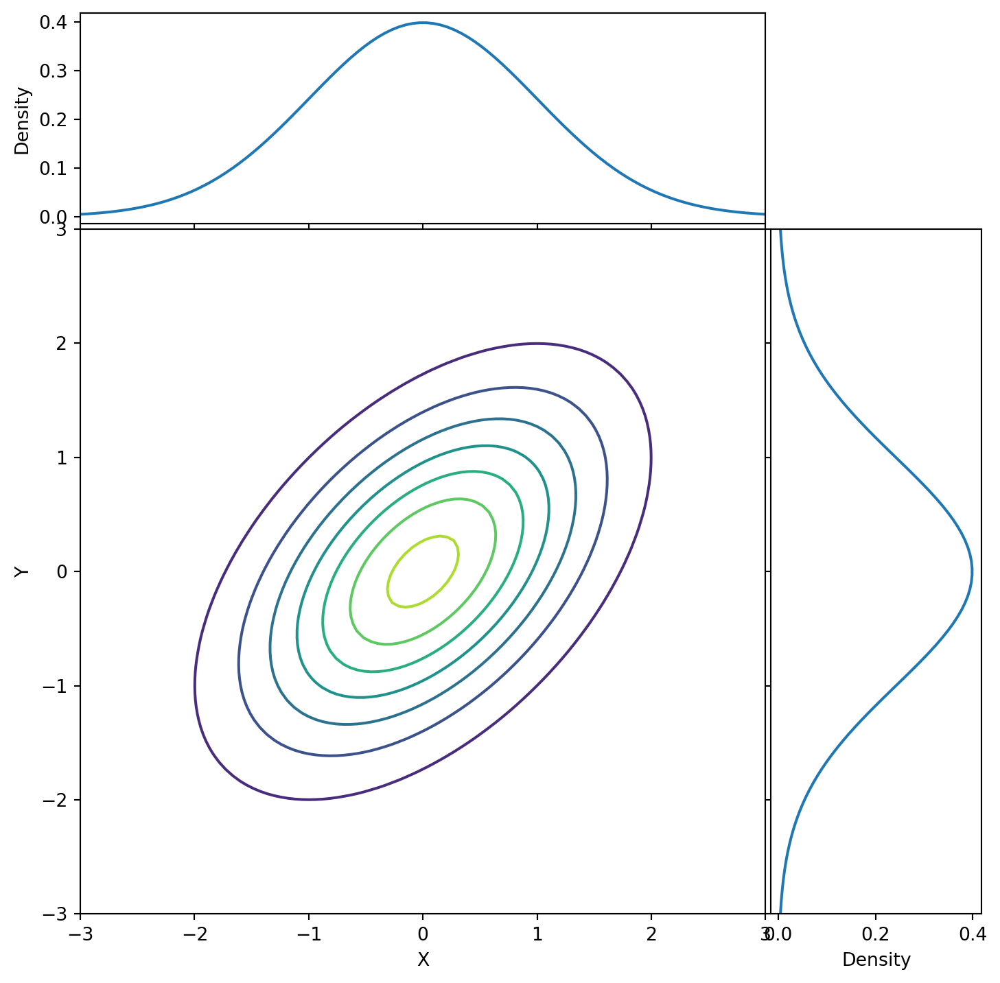
The plot shows a joint distribution of two continuous random variables \(X\) and \(Y\) as a contour plot in the center and the marginal distributions along the X and Y axes. The use of additional axes for the marginal distributions alongside the contour plot offers a comprehensive view of how the marginals relate to the joint distribution.
4.11.3 Conditional Distribution
The conditional distribution describes the probability of one random variable given the occurrence of another random variable. It essentially gives the distribution of a variable contingent on the value of another.
For discrete random variables \(X\) and \(Y\), the conditional probability mass function (PMF) of \(X\) given \(Y = y\) is defined as: \[ P(X = x | Y = y) = \frac{P(X = x, Y = y)}{P(Y = y)}.\] provided \(P(Y = y) > 0\).
For continuous random variables, the conditional probability density function (PDF) is defined similarly. If \(f_{X,Y}(x, y)\) is the joint PDF of \(X\) and \(Y\), and \(f_Y(y)\) is the marginal PDF of \(Y\), then the conditional PDF of \(X\) given \(Y = y\) is: \[ f_{X|Y}(x | y) = \frac{f_{X,Y}(x, y)}{f_Y(y)},\] again, provided \(f_Y(y) > 0\).
We will create a bivariate distribution using sampling from a Beta distribution and a Gaussian distribution, and then compute the conditional distribution.
import numpy as npimport matplotlib.pyplot as pltfrom scipy.stats import beta, norm# Generating a bivariate distribution: Beta and Gaussiannp.random.seed(0)x = beta.rvs(2, 5, size=10000) # Beta distributiony = x + norm.rvs(scale=0.1, size=10000) # Gaussian distribution, dependent on x# Compute conditional distribution: P(Y|X=x0)x0 =0.5# Condition on this value of Xindices = (x > x0 -0.05) & (x < x0 +0.05)conditional_samples = y[indices]# Plottingplt.figure(figsize=(12, 6))plt.subplot(1, 2, 1)plt.scatter(x, y, 1, alpha=0.5)plt.axvline(x=x0, color='red', linestyle='--')plt.xlabel('X (Beta distributed)')plt.ylabel('Y (Gaussian distributed)')plt.title('Bivariate Distribution (Beta and Gaussian)')plt.subplot(1, 2, 2)plt.hist(conditional_samples, bins=20, density=True, alpha=0.7, color='g')plt.xlabel('Y values')plt.ylabel('Density')plt.title(f'Conditional Distribution P(Y|X={x0})')plt.tight_layout()plt.show()
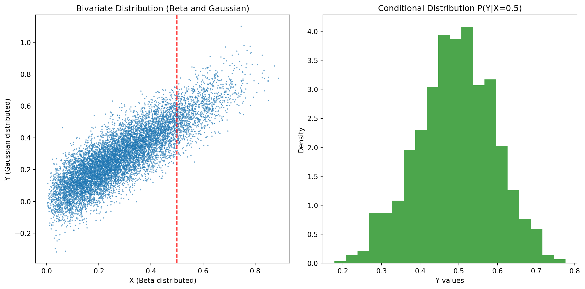
Figure shows a joint Beta-Gaussian for (x,y). It also shows the conditional distribution of y for x = 0.5. This conditional distribution is visualized in the form of a histogram. The scatter plot of the bivariate distribution helps visualize the dependency between x and y.
4.11.4 Covariance
Covariance measures the joint variability of two random variables. It indicates the direction of the linear relationship between variables.
For discrete variables \(X\) and \(Y\) with mean values \(\mu_X\) and \(\mu_Y\), the covariance is: \[\text{Cov}(X, Y) = \sum (x_i - \mu_X)(y_i - \mu_Y)P(x_i, y_i).\]
For continuous variables, it is: \[\text{Cov}(X, Y) = \int \int (x - \mu_X)(y - \mu_Y)f_{X,Y}(x, y) dx dy.\]
Positive covariance indicates that higher values of one variable are associated with higher values of the other, and vice versa. Negative covariance indicates the opposite.
4.11.5 Correlation
Correlation, specifically the Pearson correlation coefficient, measures the strength and direction of a linear relationship between two variables. Unlike covariance, it is dimensionless and normalized. It is defined as \[\rho_{X,Y} = \frac{\text{Cov}(X, Y)}{\sigma_X \sigma_Y},\] where \(\sigma_X\) and \(\sigma_Y\) are the standard deviations of \(X\) and \(Y\), respectively.The correlation coefficient ranges from -1 to 1. A value of 1 implies a perfect positive linear relationship, -1 implies a perfect negative linear relationship, and 0 implies no linear relationship.
We’ll use a simple dataset to compute and visualize the covariance and correlation between two variables:
import numpy as npimport matplotlib.pyplot as plt# Generate a simple datasetnp.random.seed(0)X = np.random.rand(1000)Y =2* X + np.random.normal(0, 0.1, 1000) # Y is linearly related to X# Compute Covariancecovariance = np.cov(X, Y)[0, 1]# Compute Correlationcorrelation = np.corrcoef(X, Y)[0, 1]# Print the computed valuesprint("Covariance between X and Y:", covariance)print("Correlation between X and Y:", correlation)# Plotting the variablesplt.scatter(X, Y, 1, alpha=0.7)plt.title("Scatter Plot of X vs Y")plt.xlabel("X")plt.ylabel("Y")plt.grid(True)plt.show()
Covariance between X and Y: 0.1682441569776687
Correlation between X and Y: 0.9863442594104381
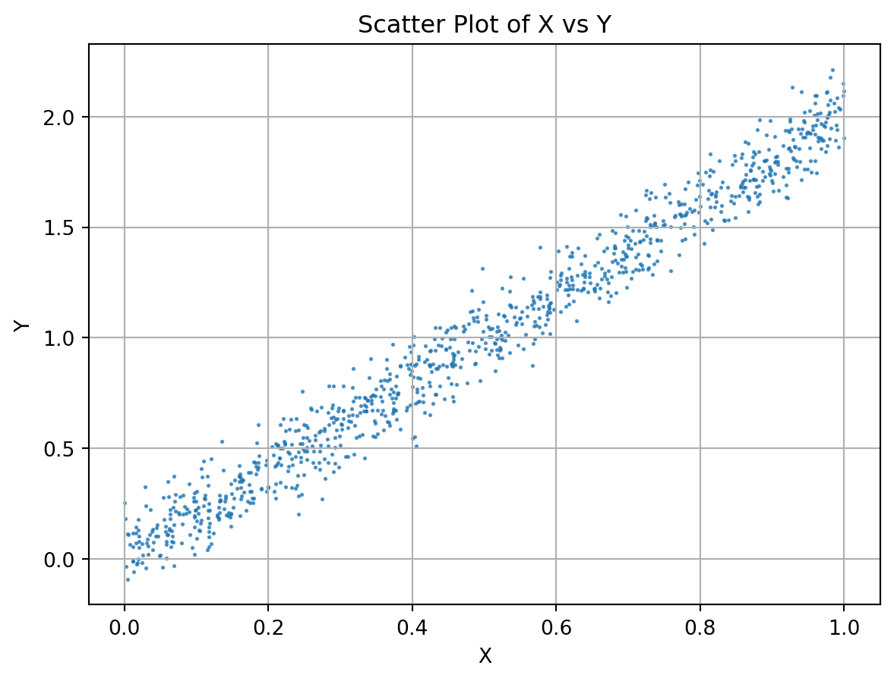
The script generates two variables, X and Y, where Y is linearly dependent on X with some added noise. It calculates the covariance and correlation between these variables and then plots them to show their relationship visually. The scatter plot provides a clear picture of how Y changes with X, and the covariance and correlation values quantify this relationship.
4.12 Various Sampling Techniques in Statistics and Machine Learning
Sampling techniques are methods used to select a subset of data from a larger dataset. In statistics and machine learning, different sampling methods are employed based on the nature of the data and the specific goals of the analysis. Here are some common sampling techniques:
4.12.1 Simple Random Sampling
Simple Random Sampling (SRS) is a fundamental statistical method where each member of a population has an equal chance of being selected for a sample. This method is highly valued for its ability to provide unbiased representations of a larger group. In SRS, the selection of one individual is completely independent of the selection of any other, ensuring that every subset of the population has an equal probability of being chosen. This randomness can be achieved through various means, such as using lottery methods or random number generators.
One of the primary advantages of SRS is its simplicity and the reduction of selection bias, making it an effective tool for obtaining representative samples. However, its practicality can be challenged in large populations due to logistical constraints, and its reliance on randomness does not always guarantee a perfectly representative sample, especially with smaller sample sizes. In the realm of machine learning and data analysis, SRS is often employed for tasks like creating balanced training and test datasets or for statistical estimations of population parameters. For example, in Python, the numpy.random.choice function can be utilized to perform SRS, allowing for the efficient selection of a random subset from a larger dataset.
4.12.2 Stratified Sampling
Stratified Sampling is a statistical technique designed to improve the representativeness and efficiency of a sample by dividing the population into distinct subgroups, or strata, based on shared characteristics before sampling. This method ensures that each subgroup is adequately represented in the final sample, addressing the potential shortcomings of simple random sampling, especially in diverse populations. The process involves first identifying relevant strata within the population – these could be based on factors like age, income, education level, or any other relevant criteria. Once the strata are established, samples are drawn independently from each stratum, typically through simple random sampling or systematic sampling methods. The size of the sample from each stratum can be proportional to the stratum’s size in the population or can be equal-sized to give equal representation to each stratum regardless of its size in the population.
Stratified sampling is particularly useful in surveys and research studies where certain subgroups within a population may be underrepresented or have significant variability. By ensuring that these subgroups are adequately represented, stratified sampling enhances the accuracy and reliability of results, making it a powerful tool for obtaining a comprehensive understanding of the entire population.
4.12.3 Cluster Sampling
Cluster sampling is a practical and efficient sampling method, especially useful in situations where the population is large and geographically dispersed. This technique involves dividing the entire population into groups or clusters, often based on geographical regions or other natural groupings. These clusters should ideally represent small-scale versions of the population. In cluster sampling, instead of selecting individual members from the entire population, a random sample of these clusters is chosen for the study, and all individuals within these selected clusters are included in the sample.
This approach can be particularly advantageous in large-scale surveys or field studies where reaching every individual is logistically challenging and cost-prohibitive. In Python, cluster sampling can be simulated by dividing a population dataset into clusters and then randomly selecting a subset of these clusters. The data from the chosen clusters are then combined to form the sample. This method reduces the cost and time of data collection significantly, making it a preferred choice for many large-scale research projects and surveys.
4.12.4 Systematic Sampling
Systematic sampling is a streamlined and efficient approach to sampling, particularly effective when dealing with large, ordered populations. This method starts by arranging the population in a sequence, after which a fixed interval or step size, known as the sampling interval, is determined. This interval is typically calculated by dividing the total population size by the desired sample size. The key to systematic sampling is the selection of a random starting point within the first interval, which ensures an element of randomness in the process. From this point, every \(k^\text{th}\) member of the population is selected to be part of the sample, where \(k\) is the sampling interval.
One of the significant advantages of systematic sampling is its simplicity and the uniform coverage it provides across the population. It’s particularly useful when a comprehensive list of the population is available, and the sampling process needs to be quick and straightforward. However, it’s important to be aware of the potential for bias, especially if the population’s ordering has a hidden periodicity that aligns with the sampling interval. Despite this, systematic sampling is a popular choice in various fields due to its ease of implementation, which can be efficiently executed in Python and other programming environments. This sampling method strikes a balance between the randomness of simple random sampling and the convenience of having a structured approach to selecting a sample.
Here’s a Python script illustrating these sampling techniques:
import numpy as npimport matplotlib.pyplot as plt# Population Datapopulation = np.random.randn(1000) # Normally distributed data# 1. Simple Random Samplingsimple_random_sample = np.random.choice(population, 100)# 2. Stratified Sampling# Assuming a binary characteristic for simplicitystrata_1 = population[population <0] # Negative valuesstrata_2 = population[population >=0] # Non-negative valuesstratified_sample = np.concatenate([np.random.choice(strata_1, 50), np.random.choice(strata_2, 50)])# 3. Cluster Sampling# Dividing into 10 clustersclusters = np.array_split(population, 10)selected_clusters = np.random.choice(np.arange(10), 3, replace=False) # Select 3 clusterscluster_sample = np.concatenate([clusters[i] for i in selected_clusters])# 4. Systematic Samplingstart = np.random.randint(0, 10)systematic_sample = population[start::10]# Plottingfig, axes = plt.subplots(2, 2, figsize=(10, 8))axes[0, 0].hist(simple_random_sample, bins=20, color='skyblue')axes[0, 0].set_title('Simple Random Sampling')axes[0, 1].hist(stratified_sample, bins=20, color='lightgreen')axes[0, 1].set_title('Stratified Sampling')axes[1, 0].hist(cluster_sample, bins=20, color='salmon')axes[1, 0].set_title('Cluster Sampling')axes[1, 1].hist(systematic_sample, bins=20, color='gold')axes[1, 1].set_title('Systematic Sampling')plt.tight_layout()plt.show()
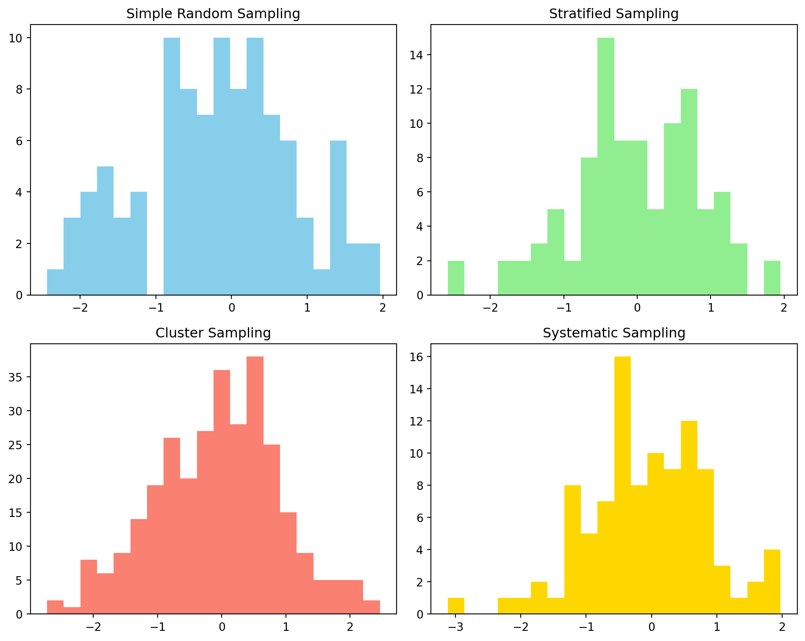
Histograms visualizing various distributions of the samples obtained through each technique described above.
4.13 Sampling from Distributions
Sampling from distributions is a crucial technique in statistics and machine learning, particularly in simulations, probabilistic modeling, and Bayesian inference. Various techniques can be used to sample from different kinds of distributions, each with its own advantages and applicable scenarios.
4.13.1 Inverse Transform Sampling
Inverse Transform Sampling, also known as the Inverse Probability Integral Transform, is a method used to generate random samples from any probability distribution, given its cumulative distribution function (CDF). This technique is particularly useful when direct sampling from the distribution is challenging.
It works in the following way:
Cumulative Distribution Function (CDF): Start with the CDF of the desired probability distribution. The CDF, \(F(x)\), of a random variable \(X\) is defined as the probability that \(X\) will take a value less than or equal to \(x\).
Uniform Random Variable: Generate a random sample \(U\) from a standard uniform distribution, i.e., \(U \sim \text{Uniform}(0,1)\).
Inverse of CDF: Use the inverse of the CDF, \(F^{-1}(u)\), to transform the uniformly distributed sample \(U\) into a sample that follows the desired distribution. The inverse CDF method hinges on the principle that if \(U\) is a uniform random variable on the interval \([0,1]\), then the variable \(X = F^{-1}(U)\) has the desired distribution.
This method effectively transforms uniformly distributed data into data that follows any given distribution, using the inverse of the CDF of that distribution. It can be applied to any distribution, provided its CDF is known and is invertible. The method is computationally efficient and widely used, especially when other sampling methods are not feasible. Inverse transform sampling is extensively used in simulations, Monte Carlo methods, and various areas where generating random samples from specific distributions is required.
Suppose we want to generate random samples from an exponential distribution using inverse transform sampling. Here’s how we might implement it in Python:
import numpy as npimport matplotlib.pyplot as pltfrom scipy.stats import expon# Number of samples to generaten_samples =1000# Generate uniform samplesuniform_samples = np.random.uniform(0, 1, n_samples)# Inverse CDF (percent point function) of the exponential distributionexponential_samples = expon.ppf(uniform_samples)# Plotting the generated samplesplt.hist(exponential_samples, bins=30, density=True, alpha=0.7, label='Sampled Data')x = np.linspace(0, 4, 100)plt.plot(x, expon.pdf(x), label='Target Distribution', color='red')plt.title('Random Samples from an Exponential Distribution')plt.xlabel('Value')plt.ylabel('Frequency')plt.legend()plt.show()
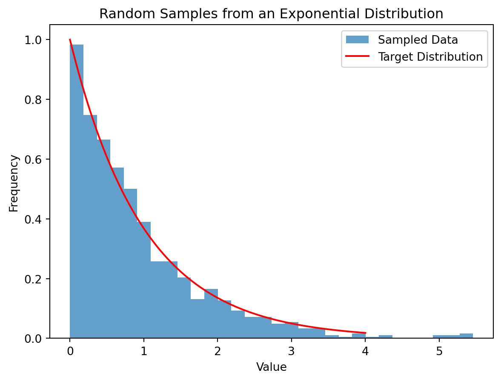
Samples from exponential distribution using inverse CDF technique.
This example demonstrates the simplicity and power of inverse transform sampling for generating random samples from a specified distribution.
4.13.2 Rejection Sampling
Rejection sampling, also known as the acceptance-rejection method, is a technique used to generate samples from a target probability distribution \(f(x)\) when direct sampling is difficult. The method involves using a simpler proposal distribution \(g(x)\) from which we can easily sample.
It works in the following way:
Choose a Proposal Distribution \(g(x)\): Select a distribution \(g(x)\) that is easy to sample from and for which there exists a constant \(M\) such that \(M \cdot g(x) \geq f(x)\) for all \(x\).
Generate Samples: Sample a point \(x\) from \(g(x)\) and a uniform random number \(u\) from the interval \([0, M \cdot g(x)]\).
Accept or Reject: Accept the sample \(x\) if \(u \leq f(x)\); otherwise, reject it and repeat the process.
Repeat: Repeat steps 2 and 3 until the desired number of samples is obtained.
The efficiency of rejection sampling depends on how closely \(g(x)\) approximates \(f(x)\) and on the value of \(M\). If \(M\) is too large or if \(g(x)\) is a poor approximation of \(f(x)\), the rejection rate will be high, making the method inefficient.
Let’s demonstrate rejection sampling in Python, where we sample from an exponential distribution using a uniform proposal distribution.
import numpy as npimport matplotlib.pyplot as pltfrom scipy.stats import expon# Target distribution: Exponential distributiondef target_distribution(x):return expon.pdf(x)# Proposal distribution: Uniform distributiondef proposal_distribution(x):return np.ones_like(x)# Rejection Samplingdef rejection_sampling(target_dist, proposal_dist, M, size=1000): samples = []whilelen(samples) < size: x_proposal = np.random.uniform(0, 4, size=size) u = np.random.uniform(0, M * proposal_dist(x_proposal), size=size) accepted = x_proposal[u <= target_dist(x_proposal)] samples.extend(accepted.tolist())return np.array(samples[:size])# ConstantsM =1.5# Choose M such that M * g(x) >= f(x)# Generate samplessamples = rejection_sampling(target_distribution, proposal_distribution, M, size=1000)# Plotting the sampled dataplt.hist(samples, bins=30, density=True, alpha=0.7, label='Sampled Data')x = np.linspace(0, 4, 100)plt.plot(x, expon.pdf(x), label='Target Distribution', color='red')plt.title('Rejection Sampling from an Exponential Distribution')plt.legend()plt.show()
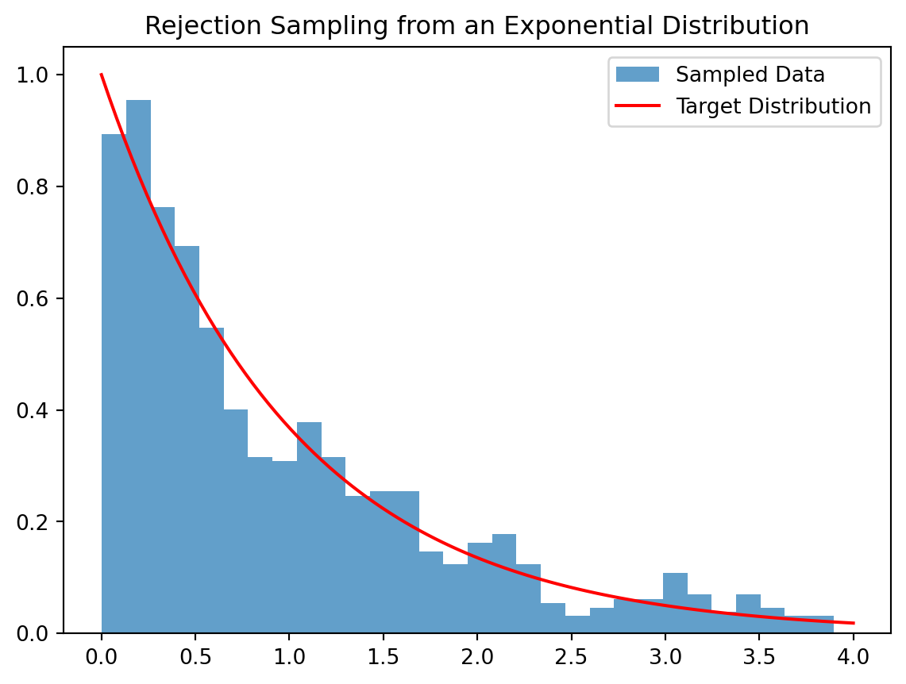
Samples from the exponential distribution using rejection sampling and uniform proposal distribution.
Rejection sampling is particularly useful in scenarios where direct sampling from the target distribution is not feasible or too complex. The key is to choose an appropriate proposal distribution and constant \(M\) to ensure a reasonable acceptance rate.
4.13.3 Importance Sampling
Importance Sampling is a statistical technique used in probability and statistics, particularly in the fields of Monte Carlo simulation and data science. It is a method for estimating properties of a particular distribution, while only having samples from a different distribution. This technique is especially useful in scenarios where direct sampling from the desired distribution is challenging or inefficient.
It works in the following way:
Select a Proposal Distribution: Choose a distribution \(g(x)\) from which it is easier to sample (known as the proposal distribution). This distribution should ideally be similar to the target distribution \(f(x)\) but also ensure that where \(f(x)\) is significantly non-zero, \(g(x)\) is also non-zero.
Generate Samples: Draw samples from the proposal distribution \(g(x)\).
Weighting Samples: Calculate weights for each sampled point. The weight for a sample \(x\) is given by the ratio of the target probability density to the proposal probability density at \(x\), i.e., \(w(x) = \frac{f(x)}{g(x)}\).
Estimate Target Expectation: The expected value of a function under the target distribution is estimated by the weighted average of that function over the samples drawn from the proposal distribution.
Importance Sampling can be more efficient than simple random sampling, especially when the area of interest under the target distribution occupies a small part of the space. It allows for the estimation of properties of one distribution using samples from another, providing flexibility in situations where sampling from the target distribution is hard.
However, it has some disadvantages. The efficiency of importance sampling heavily depends on the choice of the proposal distribution. A poor choice can lead to high variance in estimates and inefficient sampling. In some cases, a few samples may end up with very high weights, dominating the estimate and leading to high variance.
The following Python code demonstrates a simple example of importance sampling where we estimate the mean of a target exponential distribution using samples from a uniform distribution:
import numpy as npfrom scipy.stats import expon, uniform# Target distribution: Exponentialtarget_dist = expon()# Proposal distribution: Uniformproposal_dist = uniform()# Number of samplesn_samples =10000# Draw samples from the proposal distributionsamples = proposal_dist.rvs(size=n_samples)# Compute weightsweights = target_dist.pdf(samples) / proposal_dist.pdf(samples)# Estimate the mean of the target distributionestimated_mean = np.sum(weights * samples) / np.sum(weights)print("Estimated Mean of the Target Distribution:", estimated_mean)
Estimated Mean of the Target Distribution: 0.41768407894841997
In this code, we use importance sampling to estimate the mean of an exponential distribution, using samples drawn from a uniform distribution. The weights are calculated based on the ratio of the probability densities of the target and proposal distributions at each sampled point. This method provides an estimation of the desired expectation under the target distribution.
4.13.4 Markov Chain Monte Carlo (MCMC)
Markov Chain Monte Carlo (MCMC) is a set of algorithms used for sampling from probability distributions where direct sampling is difficult or impossible. MCMC enables the estimation of the distribution by constructing a Markov chain that has the desired distribution as its equilibrium distribution.
The Key concepts in MCMC are:
Markov Chain: A Markov chain is a stochastic model describing a sequence of possible events, where the probability of each event depends only on the state attained in the previous event. MCMC utilizes this property to generate samples.
Monte Carlo Integration: MCMC methods use Monte Carlo integration, where random samples are generated and used to compute estimates of desired quantities, such as means, variances, or probabilities.
Convergence to Target Distribution: The Markov chain is constructed so that it converges to the target distribution as its stationary distribution. After a ‘burn-in’ period, samples drawn from the Markov chain are used as samples from the target distribution.
The following are two popular MCMC algorithms:
Metropolis-Hastings Algorithm: This algorithm generates a Markov chain using a proposal distribution and an acceptance criterion based on the ratio of the target densities.
Gibbs Sampling: A special case of the Metropolis-Hastings algorithm that is particularly useful when sampling from high-dimensional distributions. It samples successively from the conditional distribution of each variable.
MCMC methods are widely used in various fields for estimating complex probability distributions, especially in Bayesian statistics for computing posterior distributions, in statistical physics, and in financial modeling.
Their strentgth is in versatility and ability to handle high dimensional spaces. MCMC methods can sample from virtually any probability distribution. They are particularly powerful in high-dimensional spaces where other sampling methods fail.
However, determining whether the Markov chain has converged to the target distribution can be challenging. Also, these methods can be slow, especially for complex or high-dimensional distributions.
In Bayesian statistics, MCMC is used to estimate the posterior distribution of parameters. For instance, if the likelihood function is complex or the prior distribution is not conjugate to the likelihood, traditional analytical approaches may not work, and MCMC methods like Metropolis-Hastings or Gibbs Sampling can be employed to approximate the posterior distribution. These samples then allow for statistical inference about the parameters, such as estimating means, variances, or constructing credible intervals.
MCMC methods, due to their flexibility and power, have become a cornerstone technique in modern statistical inference, particularly in scenarios where other methods are impractical or infeasible.
Implementing a simple Markov Chain Monte Carlo (MCMC) algorithm in Python can be educational for understanding how MCMC works, especially in Bayesian inference contexts. We’ll demonstrate the Metropolis-Hastings algorithm, a widely used MCMC method, to sample from a probability distribution.
For simplicity, let’s assume we want to sample from a unimodal Gaussian distribution, but the same approach can be extended to more complex distributions.
import numpy as npimport matplotlib.pyplot as pltfrom scipy.stats import norm# Target distribution (Gaussian in this example)def target_distribution(x):return norm.pdf(x, loc=0, scale=1)# Metropolis-Hastings Algorithmdef metropolis_hastings(target_pdf, initial_value, iterations, proposal_width): x = initial_value samples = [x]for i inrange(iterations):# Proposal distribution: Gaussian centered at the current sample x_proposal = np.random.normal(x, proposal_width)# Calculate acceptance probability acceptance_probability =min(target_pdf(x_proposal) / target_pdf(x), 1)# Accept or reject the proposalif np.random.random() < acceptance_probability: x = x_proposal samples.append(x)return np.array(samples)# Run the algorithminitial_value =0iterations =10000proposal_width =0.5samples = metropolis_hastings(target_distribution, initial_value, iterations, proposal_width)# Plotting the resultsplt.hist(samples, bins=30, density=True, alpha=0.6, label='Sampled Distribution')x = np.linspace(-4, 4, 1000)plt.plot(x, norm.pdf(x), label='Target Gaussian Distribution', color='red')plt.title('Sampling from a Gaussian Distribution using MCMC')plt.xlabel('Value')plt.ylabel('Density')plt.legend()plt.show()
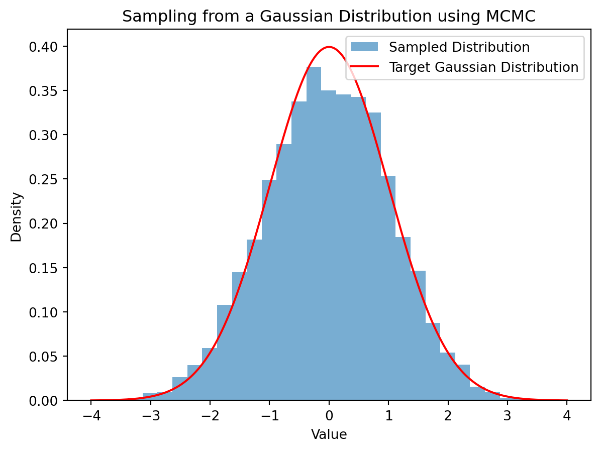
Samples from a unimodal Gaussian using the Metropolis-Hastings algorithm.
In this script:
We define a target distribution as a standard Gaussian.
The metropolis_hastings function implements the MCMC algorithm. It generates a proposal for the next sample based on the current sample (Gaussian proposal distribution) and then decides whether to accept or reject this proposal based on the acceptance probability.
We run the algorithm for a number of iterations and collect the samples.
The resulting samples are plotted against the true Gaussian distribution for comparison.
This example demonstrates how MCMC can be used to sample from a given distribution. The Metropolis-Hastings algorithm, in particular, is effective for complex distributions where direct sampling is challenging.
4.14 Distance between Distributions.
In machine learning, measuring the distance between probability distributions is crucial for various tasks, including statistical inference, clustering, and classification. These distances provide a way to quantify how similar or different two distributions are. Here are some commonly used distance metrics:
KL Divergence, named after Solomon Kullback and Richard Leibler, is a measure of how one probability distribution diverges from a second, reference probability distribution. It’s a concept from information theory, often used in statistics and machine learning.
For discrete distributions, the KL divergence of a distribution \(P\) from a distribution \(Q\) over the same probability space is defined as: \[ D_{KL}(P \parallel Q) = \sum_{i} P(i) \log\left(\frac{P(i)}{Q(i)}\right).\]
For continuous distributions, it is given by: \[ D_{KL}(P \parallel Q) = \int_{-\infty}^{\infty} p(x) \log\left(\frac{p(x)}{q(x)}\right) dx.\]
It quantifies the amount of information lost when \(Q\) is used to approximate \(P\). A KL divergence of 0 indicates that the two distributions are identical (in the continuous case, almost everywhere).
It has the following properties:
Non-Negativity: \(D_{KL}(P \parallel Q) \geq 0\), with equality if and only if \(P = Q\) (almost everywhere).
Not Symmetric: \(D_{KL}(P \parallel Q) \neq D_{KL}(Q \parallel P)\), meaning it’s not a distance in the traditional sense.
Not a Distance Metric: Since it’s not symmetric and doesn’t satisfy the triangle inequality, it’s not a true metric.
It has the following applications in machine learning:
Model Evaluation and Selection: In Bayesian statistics, KL divergence measures how much a model’s predicted distribution deviates from the true distribution, helping in model comparison and selection.
Variational Inference: It’s used in variational inference as a part of the Evidence Lower Bound (ELBO), to approximate complex posterior distributions in Bayesian models.
Feature Selection and Dimensionality Reduction: Methods like t-Distributed Stochastic Neighbor Embedding (t-SNE) use KL divergence to preserve small pairwise distances or similarities between high-dimensional data points when mapping them to a lower-dimensional space.
Training Generative Models: In generative models, like Variational Autoencoders (VAEs), KL divergence is used to regularize the encoder by penalizing deviations of its output distribution from a prior distribution, typically a Gaussian.
Information Theory: In information retrieval and natural language processing, it helps in quantifying the information gain between different stages of the model or different models.
KL Divergence is particularly useful in scenarios where understanding the difference or the information gain between distributions is crucial. Its ability to quantify the ‘distance’ between probability distributions makes it a valuable tool for probabilistic modeling, particularly in Bayesian frameworks and in scenarios where approximation of complex distributions is necessary.
4.14.2 Jensen-Shannon Divergence (JSD)
Jensen-Shannon Divergence is a method to measure the similarity between two probability distributions. It is a symmetrized and smoothed version of the Kullback-Leibler Divergence (KL Divergence). JSD overcomes some of the limitations of KL Divergence, particularly its asymmetry and the fact that it can be infinite if the two distributions being compared do not overlap.
The Jensen-Shannon Divergence between two probability distributions \(P\) and \(Q\) is defined as the average of the KL Divergences of \(P\) and \(Q\) from the mean distribution \(M = \frac{1}{2}(P + Q)\): \[ \text{JSD}(P \parallel Q) = \frac{1}{2} D_{KL}(P \parallel M) + \frac{1}{2} D_{KL}(Q \parallel M).\]
JSD quantifies the similarity between two probability distributions, with a value of 0 indicating identical distributions. It is always a finite value, bounded between 0 and 1, making it a more stable measure compared to KL Divergence.
Bounded: The values of JSD range from 0 to 1, where 0 indicates identical distributions and 1 indicates maximal divergence.
It has the following applications in machine learning:
Model Evaluation: In machine learning models, especially in natural language processing and information retrieval, JSD can be used to compare word distribution, topic distribution, or any other probability distributions that arise.
Generative Models: In training generative models, such as Generative Adversarial Networks (GANs), JSD can be used as an objective function to measure the difference between the generated data distribution and the real data distribution.
Clustering and Similarity Measurement: JSD is used in clustering algorithms to measure the similarity between different data points or clusters when the data is represented as probability distributions.
Feature Selection: It can be applied in feature selection to measure the amount of information gained by including a particular feature, especially when features can be represented probabilistically.
JSD’s symmetric and bounded nature makes it a versatile tool for comparing probability distributions in various machine learning tasks. Its ability to provide a smooth and finite measure of divergence is particularly useful in scenarios where KL Divergence might be too sensitive or undefined.
4.14.3 Earth Mover’s Distance (EMD) or Wasserstein Distance
Earth Mover’s Distance (EMD), also known as the Wasserstein Distance, is a measure of the distance between two probability distributions over a given space. The name “Earth Mover’s” stems from a practical analogy: it represents the minimum amount of “work” required to transform one distribution into the other, where “work” is quantified as the product of the amount of “mass” moved and the distance it’s moved.
In a discrete setting, if we have two distributions \(P\) and \(Q\) with the same total mass, EMD is the minimum cost of turning one distribution into the other, given a “ground distance” between individual points.
In continuous spaces, EMD is defined via the solution to the transportation problem from the field of optimization, where the goal is to find the most efficient way to move a distribution of mass to match another distribution.
The Wasserstein distance of order 1 (often used in practice) between two probability distributions \(P\) and \(Q\) is defined as: \[ W(P, Q) = \inf_{\gamma \in \Pi(P, Q)} \int_{X \times Y} d(x, y) \, d\gamma(x, y),\] where \(\Pi(P, Q)\) is the set of all joint distributions \(\gamma(x, y)\) whose marginals are \(P\) and \(Q\), and \(d(x, y)\) is a ground distance between points \(x\) and \(y\).
Unlike other distances like KL divergence, EMD provides a more intuitive geometric interpretation. EMD is effective even when the compared distributions do not overlap, a scenario where other distances can fail or give misleading results.
EMD’s ability to provide a meaningful and geometrically interpretable measure of distance between distributions has made it a valuable tool in various machine learning applications, particularly in areas where understanding the “transport” of mass or information between distributions is important.
It has the following applications in machine learning:
Optimal Transport: EMD provides a natural way to compare distributions, making it useful in optimal transport problems, where the goal is to find the most efficient way to redistribute resources.
Generative Models: In training Generative Adversarial Networks (GANs), EMD can be used as a loss function (Wasserstein loss) to measure the distance between the distribution of generated data and the distribution of real data. It has been shown to improve the stability and performance of GAN training.
Domain Adaptation: EMD is used in domain adaptation to measure the discrepancy between source and target domains, guiding the learning process to minimize this discrepancy.
Image Retrieval and Computer Vision: EMD is applied in image retrieval systems to compare images represented as distributions of features. It’s also used in other computer vision tasks for comparing histograms and texture matching.
4.14.4 Hellinger Distance
The Hellinger Distance is a metric used to quantify the similarity between two probability distributions. It’s derived from the Bhattacharyya coefficient and is used in various applications in statistics and machine learning.
The Hellinger Distance between two discrete or continuous probability distributions \(P\) and \(Q\) is defined as follows:
For Discrete Distributions: If \(P\) and \(Q\) are discrete distributions with the same support, \[ H(P, Q) = \frac{1}{\sqrt{2}} \sqrt{\sum_{i} (\sqrt{P(i)} - \sqrt{Q(i)})^2}.\]
For Continuous Distributions: For continuous distributions with density functions \(p(x)\) and \(q(x)\), \[ H(p, q) = \frac{1}{\sqrt{2}} \sqrt{\int (\sqrt{p(x)} - \sqrt{q(x)})^2 dx}.\]
The Hellinger Distance is a measure of the “overlap” between two probability distributions. A value of 0 indicates identical distributions, while a value of 1 indicates no overlap. It is symmetric and bounded between 0 and 1, making it a true metric.
As a metric, it is non-negative, symmetric, and obeys the triangle inequality, making it a reliable measure for comparing distributions. The bounded range (from 0 to 1) offers an intuitive interpretation of results. Suitable for both discrete and continuous distributions and is particularly effective in scenarios where the distributions have non-overlapping support.
In summary, the Hellinger Distance provides a robust and interpretable way to measure the similarity or difference between two probability distributions, making it a valuable tool in various machine learning tasks, particularly those involving probabilistic modeling and analysis.
It has the following application in machine learning:
Clustering and Classification: In clustering algorithms and classification models, the Hellinger Distance can be used as a similarity measure between distributions. This is particularly useful when dealing with probability histograms or distributions as features.
Model Evaluation: In probabilistic models, it can be used to compare the estimated probability distribution with the true distribution, providing a measure of model performance.
Feature Selection: In scenarios where features are represented as distributions (such as word distributions in text data), the Hellinger Distance can aid in assessing the importance of features.
Kernel Methods: The Hellinger Distance can be used to construct kernels for SVMs and other kernel-based methods, especially in applications dealing with probability distributions.
4.14.5 Total Variation Distance (TVD)
Total Variation Distance is a measure of the difference between two probability distributions. It is a metric that quantifies how much two distributions differ from each other.
For discrete distributions, the total variation distance between two probability distributions \(P\) and \(Q\) over a finite or countably infinite set is defined as: \[ TVD(P, Q) = \frac{1}{2} \sum_{i} |P(i) - Q(i)|.\]
For continuous distributions with probability density functions \(p(x)\) and \(q(x)\), TVD is given by: \[ TVD(p, q) = \frac{1}{2} \int |p(x) - q(x)| dx.\]
TVD ranges from 0 to 1. A value of 0 indicates that the two distributions are identical, while a value of 1 indicates that the distributions are completely disjoint.
It has the following properties:
Symmetric and Bounded: TVD is symmetric (i.e., \(TVD(P, Q) = TVD(Q, P)\)) and bounded between 0 and 1.
Interpretable: It provides an easily interpretable measure of the distance between distributions.
TVD is a robust metric for comparing distributions, providing a clear and bounded measure of their difference. It can be applied to both discrete and continuous distributions, making it widely applicable in various machine learning contexts.
Total Variation Distance is particularly valuable in scenarios where a straightforward and robust measure of distributional difference is required. Its bounded and symmetric nature makes it an intuitive and reliable tool for comparing probability distributions in various machine learning applications.
It has the following applications in machine learing:
Model Comparison and Selection: In machine learning, especially in probabilistic modeling, TVD can be used to compare different models by measuring how close their output distributions are to the true distribution.
Generative Models: In the training of generative models, such as Generative Adversarial Networks (GANs), TVD can be used to measure the difference between the distribution of generated data and the real data distribution.
Reinforcement Learning: In reinforcement learning, TVD can help compare the policy distributions over different iterations, aiding in the analysis of policy convergence.
Statistical Learning Theory: TVD plays a role in theoretical aspects of machine learning, such as understanding the behavior of learning algorithms and their convergence properties.
Feature Engineering: In tasks involving feature engineering, TVD can be useful for comparing feature distributions across different classes or groups, helping to identify features that provide the most discriminative power.
4.15 Functions of Random Variables
In probability and statistics, a function of a random variable is a new random variable formed by applying a function to an existing random variable. Functions of random variables are used extensively in statistics for hypothesis testing, in generating derived distributions, and in modeling relationships between variables. In machine learning, transformations of random variables are common in feature engineering and in the development of probabilistic models. Understanding functions of random variables allows one to comprehend how transformations affect the behavior and properties of the data, which is crucial in data analysis, inference, and predictive modeling.
Given a random variable \(X\) and a real-valued function \(g\), a new random variable \(Y\) can be defined as \(Y = g(X)\). The probability distribution of \(Y\) is determined by the function \(g\) and the distribution of \(X\). In general, we can have linear or nonlinear transformation of random variables,
Linear Transformations: For example, \(Y = aX + b\), where \(a\) and \(b\) are constants. Such transformations linearly scale and shift the distribution of \(X\).
Non-linear Transformations: For example, \(Y = X^2\) or \(Y = e^X\). These can significantly alter the shape of the original distribution.
4.15.1 Calculating the Distribution of \(Y = g(X)\)
4.15.1.1 Functions of Discrete Random Variables
When dealing with discrete random variables, a function of a random variable results in another discrete random variable. The distribution of this transformed variable can be computed both analytically and numerically.
Example: Analytical Approach
If \(X\) is a discrete random variable and \(g\) is a function, then \(Y = g(X)\) is also a discrete random variable. The PMF of \(Y\), denoted as \(p_Y(y)\), is computed by summing the probabilities of all values \(x\) of \(X\) that map to the same value \(y\) under the function \(g\). Mathematically, \[ p_Y(y) = \sum_{x: g(x) = y} p_X(x), \] where \(p_X(x)\) is the PMF of \(X\).
Consider a fair six-sided die. Let \(X\) be the outcome of a roll (1 to 6), and let \(Y = X^2\). We find the PMF of \(Y\) as follows:
The possible values of \(Y\) are \(\{1, 4, 9, 16, 25, 36\}\).
For each \(y\) in \(\{1, 4, 9, 16, 25, 36\}\), compute \(p_Y(y)\) using the formula. For example, \(p_Y(1) = P(X=1) = 1/6\), \(p_Y(4) = P(X=2) = 1/6\), and so on.
Example: Numerical Approach
We can also apply a numerical approach to compute the distribution of a transformed variable. We first generate a large number of values of \(X\) and apply \(g\) to each value to get corresponding values of \(Y\). We then count the frequency of each value of \(Y\) and divide by the total number of simulations to approximate the PMF. For die roll problem, we first simulate rolling a die a large number of times, say 10,000 times. For each roll, we compute compute the square of the outcome. Then we count the frequency of each squared value and divide by 10,000 to estimate the PMF of \(Y\).
This is shown in the following Python code.
import numpy as npimport matplotlib.pyplot as plt# Simulation of die rollnp.random.seed(0) # for reproducibilityrolls = np.random.randint(1, 7, 10000) # simulate 10,000 die rollssquared_rolls = rolls **2# square each roll# Compute empirical PMFvalues, counts = np.unique(squared_rolls, return_counts=True)pmf = counts / counts.sum()# Plotting the PMFplt.bar(values, pmf)plt.xlabel('Y values')plt.ylabel('Probability')plt.title('Empirical PMF of Y = X^2')plt.xticks(values)plt.show()
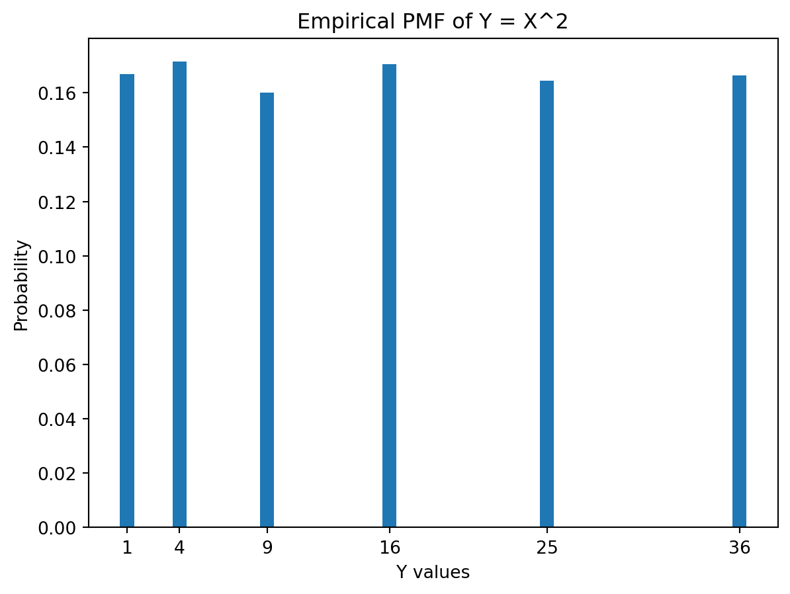
Emprical determination of the distributions of a transformed variable.
This code simulates the square of a die roll and estimates its PMF numerically. It also visualizes the PMF, offering a clear understanding of the distribution of \(Y = X^2\) when \(X\) is the outcome of a die roll. This approach is particularly useful when the analytical computation is complex or infeasible.
4.15.1.2 Functions of Continuous Random Variables
When a function is applied to a continuous random variable, it results in another continuous random variable whose distribution can be derived from the original one. This transformation is key in statistical modeling and analysis.
Let \(X\) be a continuous random variable with a probability density function (PDF) \(f_X(x)\). Consider a function \(g\) that maps \(X\) to \(Y = g(X)\). The PDF of \(Y\), denoted as \(f_Y(y)\), can be found using the change-of-variable formula, which involves the derivative of the inverse function of \(g\) and the PDF of \(X\). The formula is: \[ f_Y(y) = f_X(g^{-1}(y)) \left| \frac{d}{dy} g^{-1}(y) \right|.\]
Note: This approach requires \(g\) to be a monotonic function (i.e., either strictly increasing or decreasing).
Example: Analytical Approach
Let \(X\) be uniformly distributed between 0 and 1 (\(U(0,1)\)), and consider the transformation \(Y = e^X\). The inverse function of \(g(x) = e^x\) is \(g^{-1}(y) = \ln(y)\). The derivative of \(g^{-1}(y)\) is \(\frac{1}{y}\). Since \(X\) is uniform, \(f_X(x) = 1\) for \(x\) in [0,1]. The PDF of \(Y\) is then \(f_Y(y) = 1/y\) for \(y\) in [1, \(e\)].
Example: Numerical Approach The numerical approach consists of the following two steps:
We first generate a large number of samples from the PDF of \(X\) and apply \(g\) to obtain samples of \(Y\). This step involves two main actions: simulation and transformation.
Simulation: First, we simulate a large number of values from the probability density function (PDF) of the random variable \(X\). This simulation process requires selecting a distribution that \(X\) follows and generating random samples from this distribution. This can be done using statistical software or programming languages like Python, which have built-in functions to generate random samples from various distributions.
Transformation with Function \(g(\cdot)\): Once we have these samples, the next step is to apply a function \(g\) to each sampled value. This function \(g\) transforms the original variable \(X\) into a new variable \(Y\). The nature of \(g\) can vary greatly depending on the analysis; it could be a simple linear function, a power function, an exponential function, or any other form of mathematical function. The crucial point is that each value of \(X\) is independently put through the function \(g\) to generate a corresponding value of \(Y\).
After transforming the simulated values, the next step is to analyze the distribution of the transformed values. There are many ways of achieving this.
Empirical Distribution: This involves plotting the values of \(Y\) to visualize their distribution. One common method is constructing a histogram, where the range of \(Y\) values is divided into bins, and the frequency of values in each bin is plotted. This histogram provides a visual approximation of the PDF of \(Y\).
Density Estimation: To get a smoother estimate of the PDF of \(Y\), kernel density estimation (KDE) can be used. KDE is a non-parametric way to estimate the probability density function of a random variable and can provide a clearer view of the distribution, especially when the transformation \(g\) leads to a complex distribution.
The following Python code illustrates the steps involved in empirically determing the distribution of the square of a normal distribution. Let \(X\) be a standard normal variable. We first simulate a large number of values from \(X\) and compute \(Y = X^2\). We then plot a histogram of the \(Y\) values to approximate its distribution.
import numpy as npimport matplotlib.pyplot as plt# Simulation of a standard normal variablenp.random.seed(0)x_values = np.random.normal(0, 1, 10000) # 10,000 samples from N(0,1)y_values = x_values **2# square each value# Plotting the empirical distribution of Yplt.hist(y_values, bins=50, density=True)plt.title('Empirical Distribution of Y = X^2')plt.xlabel('Y values')plt.ylabel('Density')plt.show()
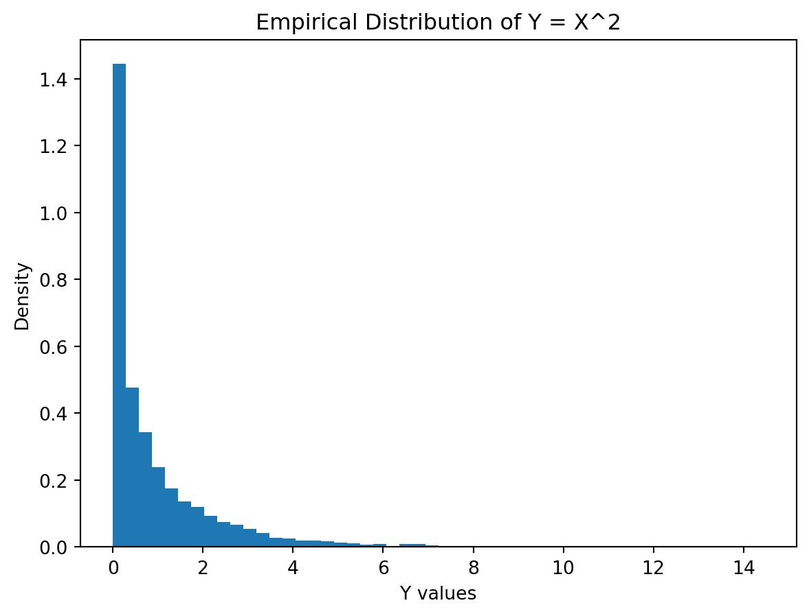
Numerical estimation of the distribution of \(Y=X^2\), where \(X\) is normally distributed.
In summary, numerical approaches are essential when the analytical derivation of \(Y\)’s distribution is complex or intractable. It provides a practical means to understand how transformations affect the distribution of a variable, which is a cornerstone in statistical analysis and data science.
4.15.2 Expectation and Variance
Computing the mean and variance of functions of random variables is a fundamental task in probability and statistics. The methods depend on whether the random variable is discrete or continuous, and the nature of the function applied to it.
4.15.2.1 Mean of a Function of a Random Variable
Discrete Random Variables: Let \(X\) be a discrete random variable and \(g(X)\) be a function of \(X\). The mean or expected value of \(g(X)\) is computed as: \[ \mathbb{E}\left[g(X)\right] = \sum_{x} g(x) \cdot P(X = x).\] Here, the sum is taken over all possible values of \(X\), and \(P(X = x)\) is the probability mass function (PMF) of \(X\).
Continuous Random Variables: For a continuous random variable \(X\) with a probability density function (PDF) \(f_X(x)\), the mean of \(g(X)\) is: \[ \mathbb{E}\left[g(X)\right] = \int_{-\infty}^{\infty} g(x) \cdot f_X(x) \, dx.\] The integral is taken over the entire range of \(X\).
4.15.2.2 Variance of a Function of a Random Variable
The variance of \(g(X)\) measures how much \(g(X)\) is expected to deviate from its mean. It is calculated as: \[ Var[g(X)] = \mathbb{E}\left[g(X)^2\right] - (\mathbb{E}\left[g(X)\right])^2.\]
For Discrete Random Variables: Compute \(\mathbb{E}\left[g(X)^2\right]\) as: \[ \mathbb{E}\left[g(X)^2\right] = \sum_{x} g(x)^2 \cdot P(X = x), \] and then, use the formula for variance.
For Continuous Random Variables: Compute \(\mathbb{E}\left[g(X)^2\right]\) by integrating: \[\mathbb{E}\left[g(X)^2\right] = \int_{-\infty}^{\infty} g(x)^2 \cdot f_X(x) \, dx, \] and then apply the variance formula.
4.15.2.3 Example
Consider \(X\) is a random variable representing the roll of a fair six-sided die, and \(g(X) = X^2\) (the square of the roll).
Variance of \(g(X)\): First, compute \(\mathbb{E}\left[g(X)^2\right] = \sum_{x=1}^{6} x^4 \cdot \frac{1}{6}\). Then, use \(Var[g(X)] = \mathbb{E}\left[g(X)^2\right]- (\mathbb{E}\left[g(X)\right])^2\).
4.16 Probabilistic Programming Languages
A probabilistic programming language (PPL) is a high-level programming language designed to describe probabilistic models and perform statistical inference within those models. Essentially, it allows us to define models in terms of probability distributions and then automatically perform complex computations like Bayesian inference.
Probabilistic Programming Languages (PPLs) and are particularly useful in machine learning for several reasons:
PPLs allow for defining complex probabilistic models where functions of random variables can represent various stochastic processes or data generation mechanisms. For example, a function might transform a Gaussian random variable to model non-normal data.
Functions of random variables can be used to incorporate domain knowledge or specific hypotheses into a model. For example, a linear combination of random variables might represent a regression model, while more complex functions can represent non-linear relationships.
PPLs provide the flexibility to define arbitrary functions of random variables, making them highly expressive for modeling a wide range of phenomena. This includes transformations, nonlinear relationships, or hierarchical structures.
Key features of PPLs include:
Model Specification: Simplifies the specification of complex probabilistic models, often using syntax similar to standard programming languages.
Inbuilt Inference Engines: PPLs typically come with in-built algorithms for performing inference, such as Markov Chain Monte Carlo (MCMC), variational inference, or other sampling methods.
Flexibility and Extensibility: They allow for easy modification and extension of models, making them suitable for a wide range of applications from simple statistical tasks to complex machine learning models.
Current state of the art packages for PPL are:
Stan: A state-of-the-art platform for statistical modeling and high-performance statistical computation.
PyMC3: A Python package for Bayesian statistical modeling and probabilistic machine learning which focuses on advanced Markov chain Monte Carlo and variational fitting algorithms.
TensorFlow Probability (TFP): A Python library built on TensorFlow for probabilistic reasoning and statistical analysis.
Edward: A Python library for probabilistic modeling, inference, and criticism, integrated with TensorFlow.
JAGS/BUGS: Software for analysis of Bayesian hierarchical models using Markov Chain Monte Carlo (MCMC) simulation.
Here’s a simple example using TensorFlow Probability (TFP) to infer the distribution of \(Y = e^X\), where \(X\) is normal.
import tensorflow as tfimport tensorflow_probability as tfpimport matplotlib.pyplot as pltimport numpy as nptfd = tfp.distributions# Define a standard normal distribution for Xdist_X = tfd.Normal(loc=0., scale=1.)# Define a sample sizesample_size =10000# Sample from Xsamples_X = dist_X.sample(sample_size)# Apply the transformation g(X) = exp(X) to get Ysamples_Y = tf.exp(0.5*samples_X)# # Convert to numpy for plotting# samples_Y_np = samples_Y.numpy()# Plot the histogram of X and Yplt.subplot(1,2,1);plt.hist(samples_X.numpy(), bins=50, density=True)plt.title('Histogram of X (normal distribution)')plt.xlabel('X')plt.ylabel('Density')plt.subplot(1,2,2);plt.hist(samples_Y.numpy(), bins=50, density=True)plt.title('Histogram of Y = exp(X)')plt.xlabel('Y')plt.ylabel('Density')plt.tight_layout()plt.show()
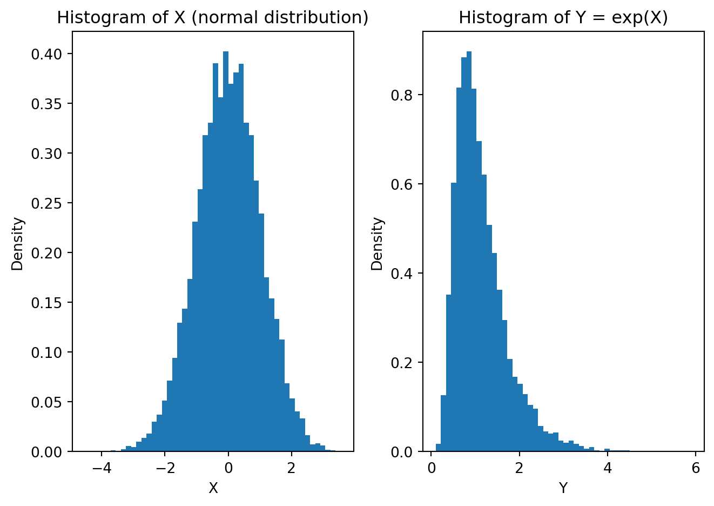
Use of TensorFlow Probability to estimate distribution of \(Y=e^X\), where \(X\) is normal.
The above script uses TensorFlow and TensorFlow Probability to create a standard normal distribution, samples from it, applies a nonlinear transformation \(Y=e^X\), and then plots the histogram of the transformed samples. This is a practical demonstration of how functions of random variables can be explored within the TensorFlow framework, which is especially useful for complex probabilistic models in machine learning. We can use this approach to determine transformation of distributions by more complex functions, such as neural networks.